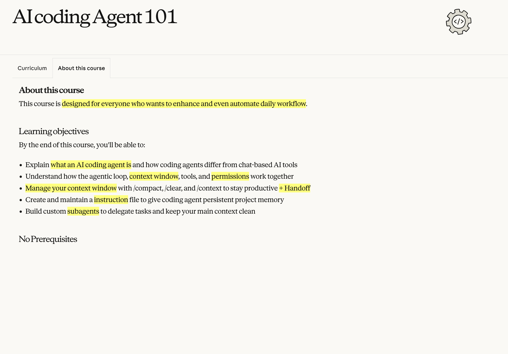
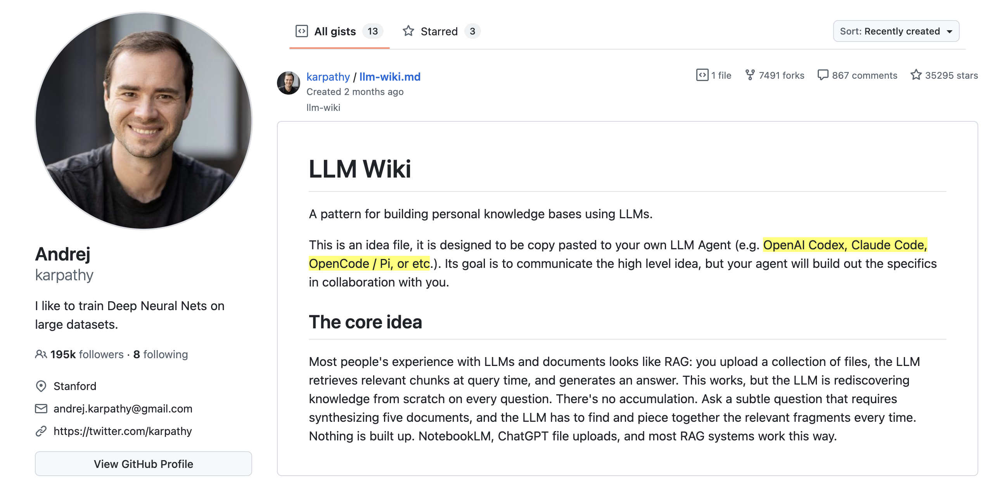
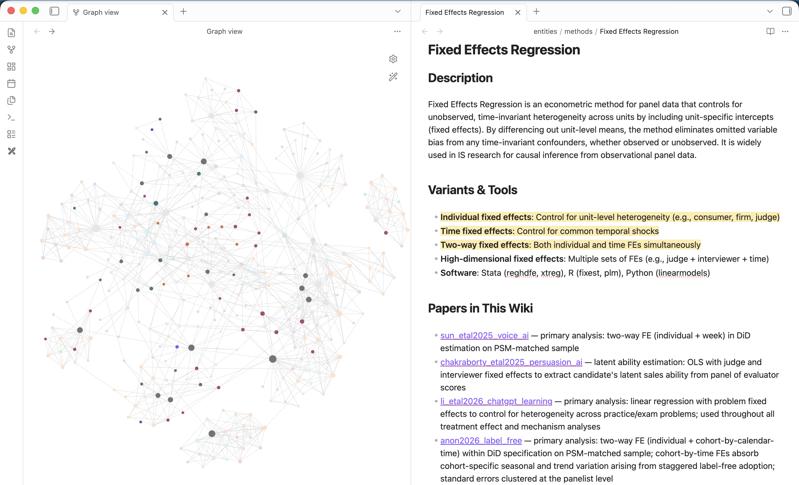
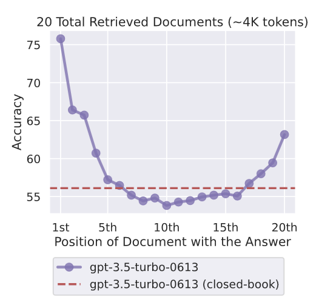
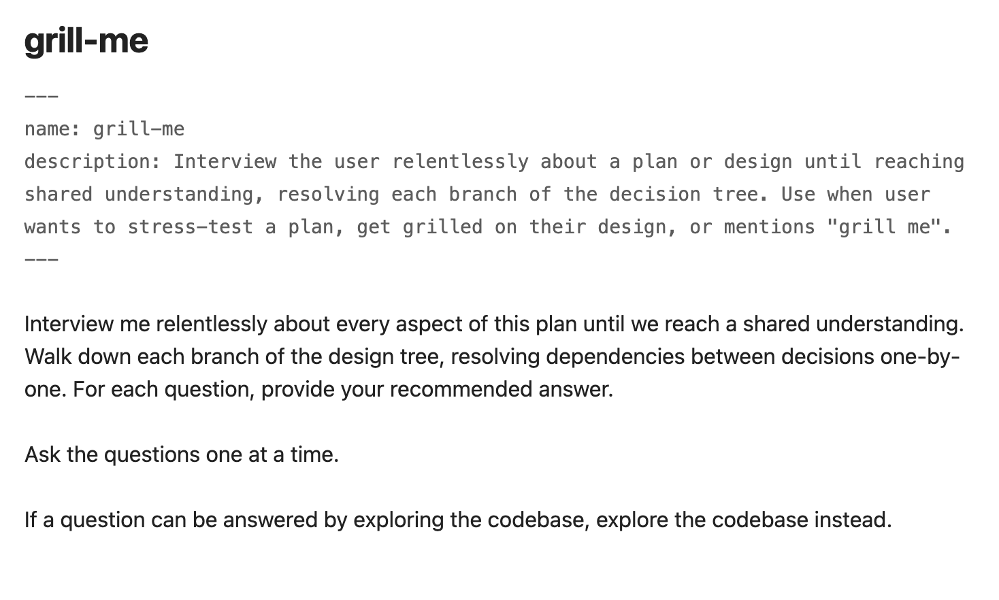
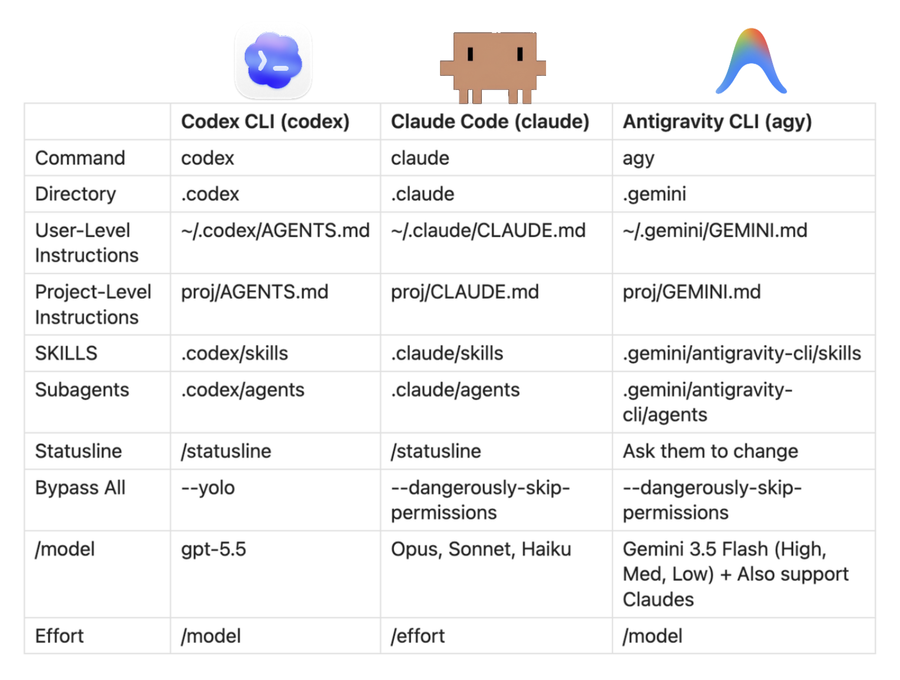

AI Coding Agents 101 for Everyone
Edgar (Myeongseok) Gwon
2026
2026

2/30

Source: anthropic.skilljar.com
3/30

4/30
AI Coding Agents
Source: youtube.com
5/30

Source: gist.github.com
6/30

7/30
Terms
Tokens
Context
Context Window
8/30
Context Window
Source: youtube.com
9/30
Your questions
Agent's answers
Available
10/30
See the Context

Source: youtube.com
11/30
Why Context Management?
Accuracy
Cost
12/30
Accuracy: Lost in the middle

Liu et al. (2023)
13/30
Cost
Pay as you use (token count)
Subscription Fee (with token limits)
14/30
Total spent $0
Taken
Available
The question
Answer (~3)
15/30
Monitor
Start New Conversation
16/30
Monitor: Use Statusline

17/30


18/30
Start New Conversation
/clear
/compact
/handoff
19/30
Instructions
Skills
Subagents
20/30
Instructions
Source: youtube.com
21/30
Skills
Source: youtube.com
22/30

Source: github.com
23/30

Source: github.com
24/30

Source: github.com
25/30
Subagents
Source: youtube.com
26/30

27/30
Practice
Execute
Statusline
Instruction & Skills
28/30
Contributions
- Model-agnostic informing session of AI Coding Agents
- Preserve key concepts while reducing contents that only related to programmers
- Choose one AI coding agents and enjoy growing with agents
29/30
References
Liu, Lin, Hewitt, Paranjape, Bevilacqua, Petroni, Liang (2023). Lost in the Middle: How Language Models Use Long Contexts. arXiv. https://doi.org/10.48550/arXiv.2307.03172
Source: https://anthropic.skilljar.com/claude-code-101
Source: https://gist.github.com/karpathy
Source: https://github.com/mattpocock/skills/tree/main/skills/productivity
Source: https://www.youtube.com/watch?v=O0FGCxkHM-U
Source: https://www.youtube.com/watch?v=bjdBVZa66oU
Source: https://www.youtube.com/watch?v=eW3oTyfeWZ0
Source: https://www.youtube.com/watch?v=jKErNxuxPXg
30/30